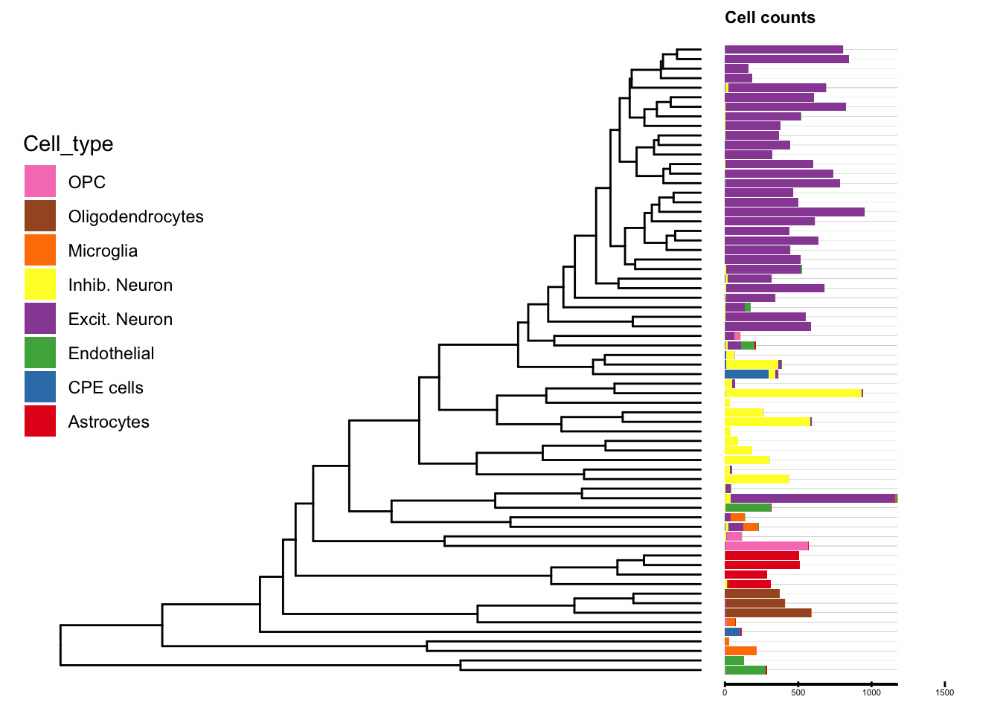

Last updated: 2020-04-25
Checks: 7 0
Knit directory: LPS/
This reproducible R Markdown analysis was created with workflowr (version 1.5.0). The Checks tab describes the reproducibility checks that were applied when the results were created. The Past versions tab lists the development history.
Great! Since the R Markdown file has been committed to the Git repository, you know the exact version of the code that produced these results.
Great job! The global environment was empty. Objects defined in the global environment can affect the analysis in your R Markdown file in unknown ways. For reproduciblity it’s best to always run the code in an empty environment.
The command set.seed(20200424) was run prior to running the code in the R Markdown file. Setting a seed ensures that any results that rely on randomness, e.g. subsampling or permutations, are reproducible.
Great job! Recording the operating system, R version, and package versions is critical for reproducibility.
Nice! There were no cached chunks for this analysis, so you can be confident that you successfully produced the results during this run.
Great job! Using relative paths to the files within your workflowr project makes it easier to run your code on other machines.
Great! You are using Git for version control. Tracking code development and connecting the code version to the results is critical for reproducibility. The version displayed above was the version of the Git repository at the time these results were generated.
Note that you need to be careful to ensure that all relevant files for the analysis have been committed to Git prior to generating the results (you can use wflow_publish or wflow_git_commit). workflowr only checks the R Markdown file, but you know if there are other scripts or data files that it depends on. Below is the status of the Git repository when the results were generated:
Ignored files:
Ignored: .Rhistory
Ignored: .Rproj.user/
Untracked files:
Untracked: .gitignore
Untracked: LPS/
Untracked: treeclimbR_article.Rproj
Note that any generated files, e.g. HTML, png, CSS, etc., are not included in this status report because it is ok for generated content to have uncommitted changes.
There are no past versions. Publish this analysis with wflow_publish() to start tracking its development.
suppressPackageStartupMessages({
library(Seurat)
library(SingleCellExperiment)
library(clustree)
library(dplyr)
library(ggtree)
library(ggnewscale)
library(cowplot)
library(TreeSummarizedExperiment)
library(TreeHeatmap)
})ao <- readRDS(file.path("output", "ao.rds"))
as <- readRDS(file.path("output", "as.rds"))ao_list <- lapply(split(colnames(ao), ao$sample_id), FUN=function(x) subset(ao, cells=x))known_markers <- list(
astrocytes = c("Aqp4", "Gfap", "Fgfr3"),
endothelial = c("Cldn5","Nostrin"),
microglia = c("C1qb","Tyrobp"),
neuronal = c("Snap25", "Stmn2"),
neuronal_excitatory = "Slc17a7",
neuronal_inhibitory = "Gad1",
oligodendrocyte = "Opalin",
OPC = "Pdgfra")
known_mk <- match(unlist(known_markers),
gsub(".*\\.", "", rownames(ao@assays$RNA)))
known_mk <- rownames(ao@assays$RNA)[known_mk]For each cell type, we select 20 markers that have the highest absolute value of log fold change. This is performed separately for samples in control group (WT) to avoid selecting state-marker genes.
sample_WT <- ao@meta.data %>%
filter(group_id == "WT") %>%
select(sample_id) %>%
unlist() %>%
unique()
mk_list <- lapply(ao_list[sample_WT], FUN = function(x){
FindAllMarkers(x, logfc.threshold = 0.5,
verbose = FALSE)})
saveRDS(mk_list, file = "temp/mk_list.rds")# Find top N markers
topN <- 20
sel_list <- lapply(mk_list, FUN = function(x) {
x %>%
group_by(cluster) %>%
top_n(topN, abs(avg_logFC)) %>%
ungroup(cluster) %>%
select(gene) %>%
unlist() %>%
unique()})
# select markers in at least 2 samples (50%)
sel_u <- unlist(sel_list)
length(unique(sel_u))[1] 225tb <- table(sel_u)
sel <- names(tb[tb >= 2])
length(sel)[1] 125# type markers: known markers & selected markers
sum(known_mk %in% sel)[1] 3length(setdiff(known_mk, sel))[1] 10all_mk <- unique(c(sel, known_mk))
length(all_mk)[1] 135saveRDS(all_mk, file = "temp/all_mk.rds")
# integrate data (using type markers + default(anchor.feature))
ft <- unique(c(as@anchor.features, all_mk))
ias <- IntegrateData(anchorset = as,
features.to.integrate = ft,
dims = 1:20, verbose = FALSE)
length(ias@assays$integrated@var.features)[1] 2000dim(ias@assays$integrated@data)[1] 2011 26607ias@assays$integrated@scale.data [,1]
[1,] NA# scale data (using type markers)
ias <- ScaleData(ias, features = ft, verbose = FALSE)
length(ias@assays$integrated@var.features)[1] 2000dim(ias@assays$integrated@scale.data)[1] 2011 26607dim(ias@assays$integrated@data)[1] 2011 26607Cells are clustered using all type markers.
# run PCA using type markers
ias <- RunPCA(ias, features = all_mk,
npcs = 30, verbose = FALSE)
saveRDS(ias, file = "temp/ias.rds")
# t-SNE and Clustering
ias <- RunUMAP(ias, reduction = "pca", dims = 1:20,
verbose = FALSE)Warning: The default method for RunUMAP has changed from calling Python UMAP via reticulate to the R-native UWOT using the cosine metric
To use Python UMAP via reticulate, set umap.method to 'umap-learn' and metric to 'correlation'
This message will be shown once per sessionias <- FindNeighbors(ias,
reduction = "pca", dims = 1:20,
verbose = FALSE)Leaves of the tree are clusters generated specified resolution.
reso <- 6
ias <- FindClusters(ias, resolution = reso, verbose = FALSE)
ias <- BuildClusterTree(object = ias,
dims = 1:20)
cell_tree <- Tool(object = ias, slot = 'BuildClusterTree')
cell_tree
Phylogenetic tree with 66 tips and 65 internal nodes.
Tip labels:
0, 1, 2, 3, 4, 5, ...
Rooted; includes branch lengths.#saveRDS(cell_tree, file = "output/cell_tree.rds")Within cluster, cell counts in each cell type are calcuated.
# information: cell types + cluster ID
reso_vn <- paste0("integrated_snn_res.", reso)
cell_info <- ao@meta.data %>%
select("sample_id", "barcode", "group_id", "cell_type") %>%
mutate(cell = rownames(ao@meta.data)) %>%
left_join(ias@meta.data[, c("sample_id", "barcode", "group_id",
reso_vn)]) %>%
rename(cluster_id = !!reso_vn)Joining, by = c("sample_id", "barcode", "group_id")# cell type of each leaf on the tree
aa <- table(cell_info$cell_type, cell_info$cluster_id)
ind <- apply(aa, 2, which.max)
cell_anno <- data.frame(cluster_id = colnames(aa),
node = transNode(tree = cell_tree,
node = colnames(aa)),
cell_type = rownames(aa)[ind])
rownames(cell_anno) <- cell_anno$cluster_idLeaves of the tree are annotated with cell types. The bar plot displays cell counts of cell types within each cluster. The cell type that has maximum counts in a cluster is used to annotate the leaf.
# Tree
Fig_0 <- ggtree(cell_tree, ladderize = TRUE)
# Tree + cell type
d <- dplyr::filter(Fig_0$data, isTip) %>% select(c(label, y))
dd <- cell_info %>%
rename(label = cluster_id) %>%
left_join(d, by='label')Warning: Column `label` joining factor and character vector, coercing into
character vectorcolr <- c("Astrocytes" = "#E41A1C", "CPE cells" = "#377EB8",
"Endothelial" = "#4DAF4A", "Excit. Neuron" = "#984EA3",
"Inhib. Neuron" = "#FFFF33", "Microglia" = "#FF7F00",
"Oligodendrocytes" = "#A65628", "OPC" = "#F781BF")
bar <- ggplot(dd, aes(x = y)) +
geom_bar(aes(fill = cell_type)) +
scale_fill_manual(values = colr) +
theme(legend.position = "none") +
theme(axis.line.x=element_blank(),
axis.text.y=element_blank(),
axis.ticks.y=element_blank(),
axis.title.x=element_blank(),
axis.title.y=element_blank(),
legend.position="none",
panel.background=element_blank(),
panel.border=element_blank(),
panel.grid.major=element_blank(),
panel.grid.minor=element_blank(),
plot.background=element_blank())
bar_df <- ggplot_build(bar)$data[[1]]
vf <- bar_df$fill
names(vf) <- vf
# flip x-y coordinates and scale x
scale_bar <- 1/300
ux <- max(bar_df$ymax)
lx <- min(bar_df$ymin)
# barplot: gap to the tree (2)
gap_tree <- ceiling(max(Fig_0$data$x)) + 0.1
#
ct <- names(colr)
names(ct) <- colr
dat_bar <- bar_df %>%
select(fill, x, xmin, xmax, ymin, ymax) %>%
rename(ymin = xmin,
ymax = xmax,
xmin = ymin,
xmax = ymax,
y = x) %>%
mutate(xmin_s = (xmin-lx)/(ux-lx)*ux*scale_bar+ gap_tree,
xmax_s = (xmax-lx)/(ux-lx)*ux*scale_bar+ gap_tree,
Cell_type = factor(ct[fill], levels = rev(ct)) )
# label cell counts
x_bar_label <- c(0, 500, 1000, 1500)
names(x_bar_label) <- as.character(x_bar_label*scale_bar + gap_tree)
dat_bar_ext <- dat_bar %>%
mutate(xmin = min(xmin_s), xmax = max(xmax_s))
Fig_1 <- Fig_0 +
geom_segment(data = dat_bar_ext,
aes(x = xmin, xend = xmax,
y = y, yend = y),
linetype = "solid",
color = "grey80", size = 0.05,
show.legend = FALSE)+
geom_rect(data = dat_bar,
aes(xmin = xmin_s, ymin = ymin,
xmax = xmax_s, ymax = ymax,
fill = Cell_type),
inherit.aes = FALSE) +
scale_fill_manual(values = colr) +
geom_segment(data = dat_bar,
aes (x = min(xmin_s), y = -0.5,
xend = max(xmax_s), yend = -0.5),
size = 0.4) +
annotate("segment",
x = as.numeric(names(x_bar_label)),
y = rep(-0.2, length(x_bar_label)),
xend = as.numeric(names(x_bar_label)),
yend = rep(-0.8, length(x_bar_label)),
size = 0.5) +
annotate("text",
x = as.numeric(names(x_bar_label)),
y = rep(-1.3, length(x_bar_label)),
label= x_bar_label, size = 1.5) +
annotate("text", x = mean(min(dat_bar$xmin_s),max(dat_bar$xmax_s)),
y = max(dat_bar$ymax) + 3, label = "Cell counts",
hjust =0, fontface = "bold", size = 3) +
guides(fill = guide_legend(order = 2, ncol = 2)) +
new_scale_fill() +
theme(legend.position = c(0.1, 0.6))
Fig_1 
The data of type genes is saved for later visualization as a SingleCellExperiment object.
# scale data of cell type marker
mkc <- ias@assays$integrated@scale.data[all_mk, ]
# cell information
cell_dt <- cbind.data.frame(
cell = rownames(ias@meta.data),
ias@meta.data[, c("sample_id", "barcode", "group_id",
reso_vn)]) %>%
rename(cluster_id = !!reso_vn) %>%
left_join(cell_anno) Joining, by = "cluster_id"se_mk <- SummarizedExperiment(assays = list(mkc),
colData = cell_dt)
#saveRDS(se_mk, file = "output/se_mk.rds")The original data of genes that are not selected as type genes for all cells is output as a SummarizedExperiment object. The data is later aggregated the different levels of the tree to compare between groups LPS and WT.
(test <- all(rownames(ao@meta.data) == rownames(ias@meta.data)))[1] TRUEif (!test) {stop("the order of genes are changed")}
# the original data
DefaultAssay(ias) <- "RNA"
count <- ias@assays$RNA@counts
count <- count[!rownames(count) %in% all_mk, ]
cell_info <- ao@meta.data %>%
select("sample_id", "barcode", "group_id", "cell_type") %>%
mutate(cell = rownames(ao@meta.data)) %>%
left_join(ias@meta.data[, c("sample_id", "barcode", "group_id",
reso_vn)]) %>%
rename(cluster_id = !!reso_vn) Joining, by = c("sample_id", "barcode", "group_id")se_count <- SummarizedExperiment(assays = list(count),
colData = cell_info)saveRDS(known_mk, file = "output/known_mk.rds")
saveRDS(cell_tree, file = "output/cell_tree.rds")
saveRDS(se_mk, file = "output/se_mk.rds")
saveRDS(se_count, file = "output/se_count.rds")
saveRDS(cell_info, file = "output/cell_info.rds")
saveRDS(all_mk, file = "output/all_mk.rds")
sessionInfo()R version 3.6.1 (2019-07-05)
Platform: x86_64-apple-darwin15.6.0 (64-bit)
Running under: macOS Mojave 10.14.4
Matrix products: default
BLAS: /Library/Frameworks/R.framework/Versions/3.6/Resources/lib/libRblas.0.dylib
LAPACK: /Library/Frameworks/R.framework/Versions/3.6/Resources/lib/libRlapack.dylib
locale:
[1] en_US.UTF-8/en_US.UTF-8/en_US.UTF-8/C/en_US.UTF-8/en_US.UTF-8
attached base packages:
[1] parallel stats4 stats graphics grDevices utils datasets
[8] methods base
other attached packages:
[1] TreeHeatmap_0.1.0 TreeSummarizedExperiment_1.3.0
[3] cowplot_1.0.0 ggnewscale_0.4.0
[5] ggtree_2.1.6 dplyr_0.8.5
[7] clustree_0.4.1 ggraph_2.0.0
[9] ggplot2_3.3.0 SingleCellExperiment_1.8.0
[11] SummarizedExperiment_1.16.0 DelayedArray_0.12.0
[13] BiocParallel_1.20.0 matrixStats_0.55.0
[15] Biobase_2.46.0 GenomicRanges_1.38.0
[17] GenomeInfoDb_1.22.0 IRanges_2.20.0
[19] S4Vectors_0.24.0 BiocGenerics_0.32.0
[21] Seurat_3.1.1 workflowr_1.5.0
loaded via a namespace (and not attached):
[1] backports_1.1.6 plyr_1.8.5 igraph_1.2.4.1
[4] lazyeval_0.2.2 splines_3.6.1 listenv_0.7.0
[7] digest_0.6.25 htmltools_0.4.0 viridis_0.5.1
[10] gdata_2.18.0 fansi_0.4.1 magrittr_1.5
[13] cluster_2.1.0 ROCR_1.0-7 globals_0.12.4
[16] graphlayouts_0.5.0 RcppParallel_4.4.4 R.utils_2.9.0
[19] colorspace_1.4-1 ggrepel_0.8.1 xfun_0.11
[22] crayon_1.3.4 RCurl_1.95-4.12 jsonlite_1.6.1
[25] survival_2.44-1.1 zoo_1.8-6 ape_5.3
[28] glue_1.4.0 polyclip_1.10-0 gtable_0.3.0
[31] zlibbioc_1.32.0 XVector_0.26.0 leiden_0.3.1
[34] future.apply_1.3.0 scales_1.1.0 bibtex_0.4.2
[37] Rcpp_1.0.4 metap_1.1 viridisLite_0.3.0
[40] tidytree_0.3.3 reticulate_1.13 rsvd_1.0.2
[43] SDMTools_1.1-221.1 tsne_0.1-3 htmlwidgets_1.5.1
[46] httr_1.4.1 gplots_3.0.1.1 RColorBrewer_1.1-2
[49] ellipsis_0.3.0 ica_1.0-2 pkgconfig_2.0.3
[52] R.methodsS3_1.7.1 farver_2.0.3 uwot_0.1.4
[55] labeling_0.3 tidyselect_1.0.0 rlang_0.4.5
[58] reshape2_1.4.3 later_1.0.0 munsell_0.5.0
[61] tools_3.6.1 cli_2.0.2 ggridges_0.5.1
[64] evaluate_0.14 stringr_1.4.0 yaml_2.2.0
[67] npsurv_0.4-0 knitr_1.26 fs_1.3.1
[70] fitdistrplus_1.0-14 tidygraph_1.1.2 caTools_1.17.1.2
[73] purrr_0.3.3 RANN_2.6.1 pbapply_1.4-2
[76] future_1.15.0 nlme_3.1-142 R.oo_1.23.0
[79] aplot_0.0.4 compiler_3.6.1 plotly_4.9.1
[82] png_0.1-7 lsei_1.2-0 treeio_1.11.2
[85] tibble_3.0.0 tweenr_1.0.1 stringi_1.4.6
[88] RSpectra_0.15-0 lattice_0.20-38 Matrix_1.2-17
[91] vctrs_0.2.4 pillar_1.4.3 lifecycle_0.2.0
[94] BiocManager_1.30.10 Rdpack_0.11-0 lmtest_0.9-37
[97] RcppAnnoy_0.0.14 data.table_1.12.6 bitops_1.0-6
[100] irlba_2.3.3 gbRd_0.4-11 httpuv_1.5.2
[103] patchwork_1.0.0 R6_2.4.1 promises_1.1.0
[106] KernSmooth_2.23-15 gridExtra_2.3 codetools_0.2-16
[109] MASS_7.3-51.4 gtools_3.8.1 assertthat_0.2.1
[112] rprojroot_1.3-2 withr_2.1.2 sctransform_0.2.0
[115] GenomeInfoDbData_1.2.2 grid_3.6.1 tidyr_1.0.2
[118] rmarkdown_1.17 rvcheck_0.1.8 Rtsne_0.15
[121] git2r_0.26.1 ggforce_0.3.1